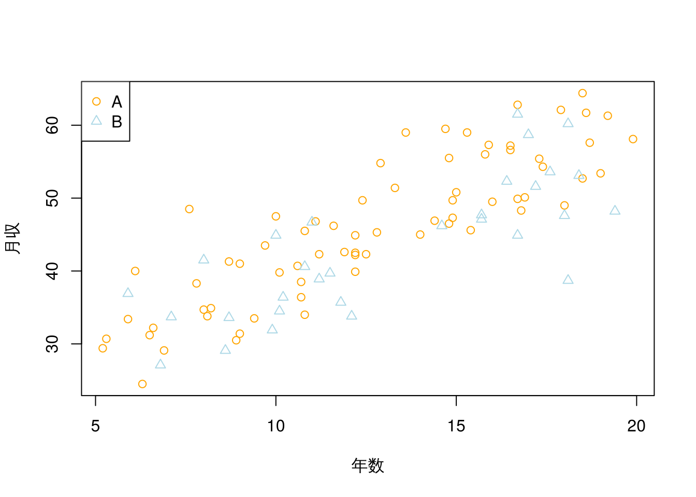
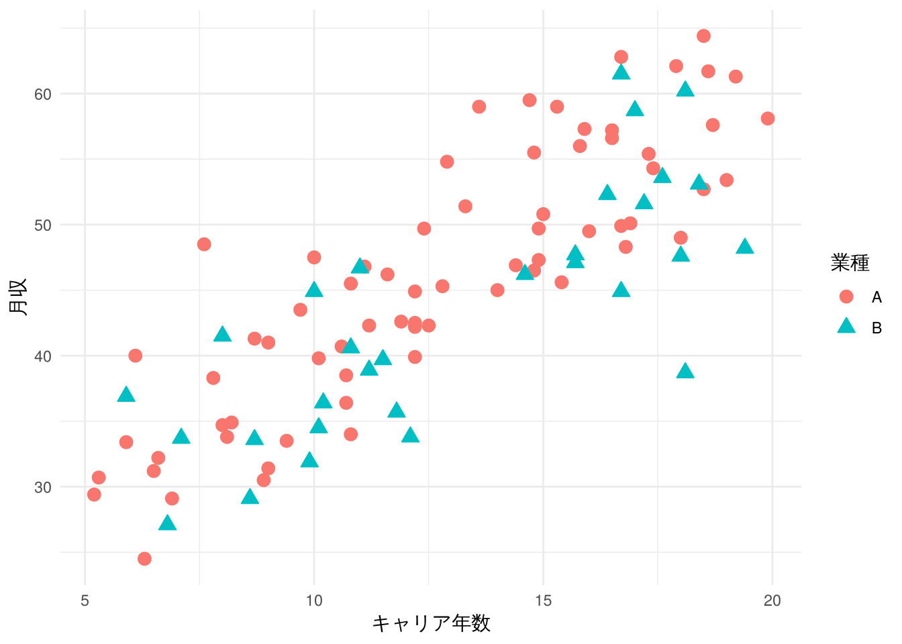
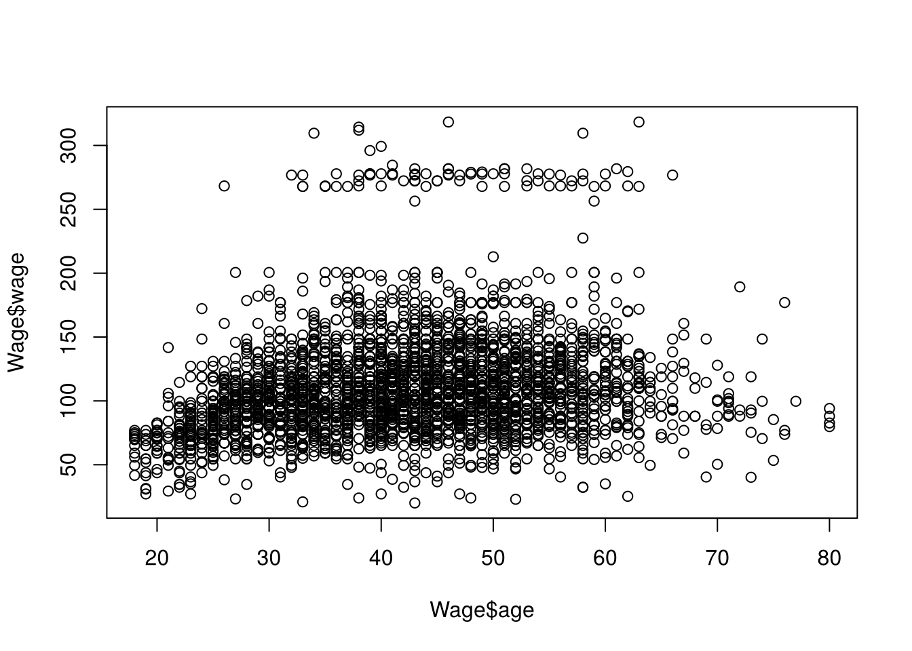
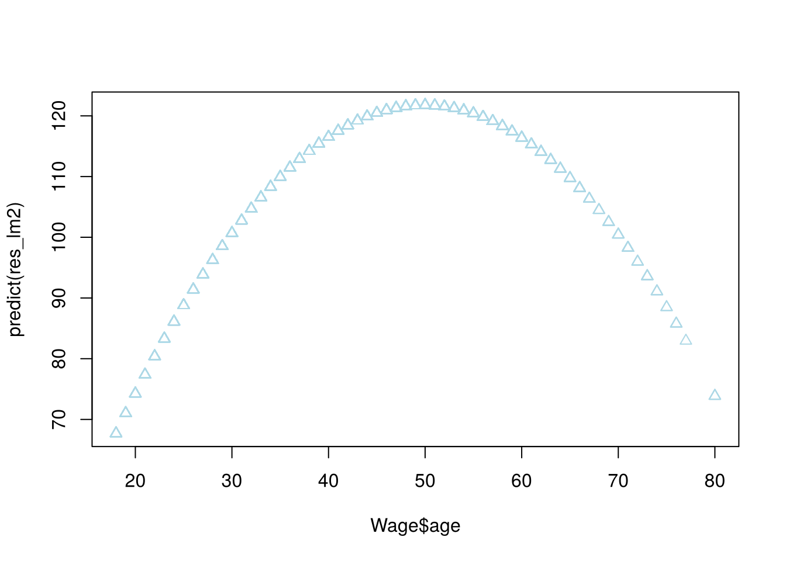
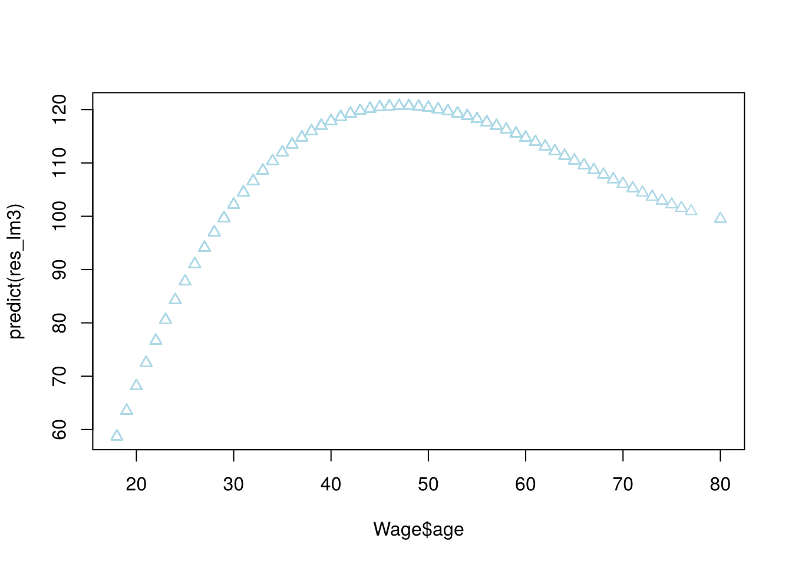
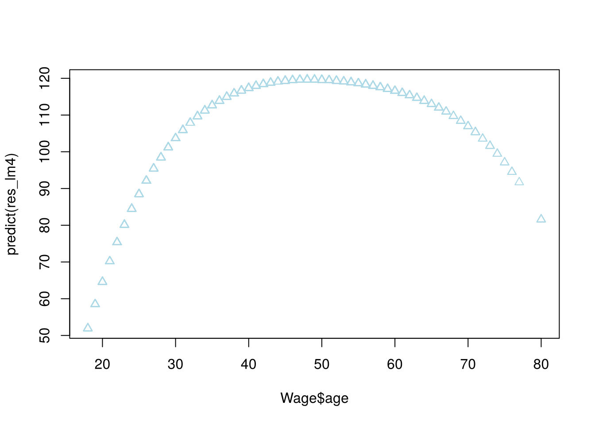

6 線形回帰 (2)
授業では, R_linreg-2_dist.R の内容について, 以下の3点を簡単に取り上げた.
income.csvの散布図を見せて, 業種 (A/B) によって傾向が異なりそうだということを紹介したBS_stattest.csvを使って,anova(lm(score ~ math))とanova(lm(score ~ factor(math)))の結果の違いを見たWageデータセットを使った多項式回帰について, 簡単な紹介をした
本章では, この3つのトピックについて, 自習用として内容を深め, 実際に手を動かして 確認できるようにする.
6.1 質的変数を含む回帰
データセット: キャリア年数と月収
授業で見せたのと同じ, キャリア年数と月収に関する仮想データを使う.
月収: 月収 (万円)キャリア年数: 勤続年数能力試験: 能力調査のスコア業種: A または B
dat1 <- read.csv("class/income.csv")
head(dat1)
#> 月収 キャリア年数 能力試験 業種
#> 1 64.4 18.5 53 A
#> 2 31.4 9.0 46 A
#> 3 40.7 10.6 74 A
#> 4 59.0 13.6 42 A
#> 5 61.7 18.6 49 A
#> 6 34.7 8.0 53 A授業で見せた, 業種によって色分けした散布図を再掲する.
dat1_A <- dat1[(dat1[, "業種"] == "A"), ]
dat1_B <- dat1[(dat1[, "業種"] == "B"), ]
plot(dat1_A[, "キャリア年数"], dat1_A[, "月収"], col = "orange", xlab = "年数",
ylab = "月収", pch = 1)
points(dat1_B[, "キャリア年数"], dat1_B[, "月収"], col = "lightblue", pch = 2)
legend("topleft", legend = c("A", "B"), col = c("orange", "lightblue"), pch = c(1,
2))
(ggplot2を使うと, 以下のように同じ図をより見やすく描くこともできる.)
library(ggplot2)
ggplot(data = dat1, aes(x = キャリア年数, y = 月収, color = 業種, shape = 業種,
fill = 業種)) + geom_point(size = 3) + scale_shape_manual(values = c(21, 24)) +
labs(x = "キャリア年数", y = "月収") + theme_minimal()
キャリア年数が長いほど月収が高い, という傾向自体はA・Bいずれの業種にも共通して 見られるが, 同じキャリア年数でも, A業種の方がB業種よりも月収が高い (切片が ずれている) ように見える.
業種を考慮しない回帰
まず, 業種を無視して, キャリア年数だけで月収を説明するモデルを当てはめる.
lm1_mod0 <- lm(月収 ~ キャリア年数, data = dat1)
summary(lm1_mod0)
#>
#> Call:
#> lm(formula = 月収 ~ キャリア年数, data = dat1)
#>
#> Residuals:
#> Min 1Q Median 3Q Max
#> -16.8581 -3.4759 -0.7415 4.5299 13.6303
#>
#> Coefficients:
#> Estimate Std. Error t value Pr(>|t|)
#> (Intercept) 19.8952 1.8298 10.87 <2e-16 ***
#> キャリア年数 1.9703 0.1362 14.46 <2e-16 ***
#> ---
#> Signif. codes: 0 '***' 0.001 '**' 0.01 '*' 0.05 '.' 0.1 ' ' 1
#>
#> Residual standard error: 5.495 on 98 degrees of freedom
#> Multiple R-squared: 0.681, Adjusted R-squared: 0.6778
#> F-statistic: 209.2 on 1 and 98 DF, p-value: < 2.2e-16
anova(lm1_mod0) # ANOVA表
#> Analysis of Variance Table
#>
#> Response: 月収
#> Df Sum Sq Mean Sq F value Pr(>F)
#> キャリア年数 1 6316.7 6316.7 209.23 < 2.2e-16 ***
#> Residuals 98 2958.6 30.2
#> ---
#> Signif. codes: 0 '***' 0.001 '**' 0.01 '*' 0.05 '.' 0.1 ' ' 1キャリア年数の効果は統計的に非常に有意である. しかし, 先ほどの散布図で見たように, 業種による違いを無視してしまっている可能性がある.
業種を加えた回帰
update() を使って, 既存のモデルに 業種 を追加する.
lm1_mod1 <- update(lm1_mod0, . ~ . + 業種)
summary(lm1_mod1)
#>
#> Call:
#> lm(formula = 月収 ~ キャリア年数 + 業種, data = dat1)
#>
#> Residuals:
#> Min 1Q Median 3Q Max
#> -14.4436 -3.5628 -0.6921 3.5165 12.6536
#>
#> Coefficients:
#> Estimate Std. Error t value Pr(>|t|)
#> (Intercept) 20.7222 1.7727 11.690 < 2e-16 ***
#> キャリア年数 1.9900 0.1306 15.233 < 2e-16 ***
#> 業種B -3.5982 1.1499 -3.129 0.00232 **
#> ---
#> Signif. codes: 0 '***' 0.001 '**' 0.01 '*' 0.05 '.' 0.1 ' ' 1
#>
#> Residual standard error: 5.264 on 97 degrees of freedom
#> Multiple R-squared: 0.7103, Adjusted R-squared: 0.7043
#> F-statistic: 118.9 on 2 and 97 DF, p-value: < 2.2e-16
anova(lm1_mod1) # ANOVA表
#> Analysis of Variance Table
#>
#> Response: 月収
#> Df Sum Sq Mean Sq F value Pr(>F)
#> キャリア年数 1 6316.7 6316.7 227.9980 < 2.2e-16 ***
#> 業種 1 271.2 271.2 9.7906 0.002317 **
#> Residuals 97 2687.4 27.7
#> ---
#> Signif. codes: 0 '***' 0.001 '**' 0.01 '*' 0.05 '.' 0.1 ' ' 1業種B の係数は負で有意であり, キャリア年数の効果を一定とした場合, B業種は
A業種よりも月収が低い (切片が約3.6万円低い) ことが分かる. 一方, キャリア年数の
係数自体は, 業種を加える前とほとんど変わっていない.
交互作用項を加えたモデル
業種によって, キャリア年数の効果 (傾き) 自体が異なるかどうかを確認するには, 交互作用項を加える.
lm1_mod1_2 <- lm(月収 ~ キャリア年数 * 業種, data = dat1)
summary(lm1_mod1_2)
#>
#> Call:
#> lm(formula = 月収 ~ キャリア年数 * 業種, data = dat1)
#>
#> Residuals:
#> Min 1Q Median 3Q Max
#> -13.2175 -3.7691 -0.8021 3.4916 13.2028
#>
#> Coefficients:
#> Estimate Std. Error t value Pr(>|t|)
#> (Intercept) 19.3523 2.0795 9.306 4.6e-15 ***
#> キャリア年数 2.0980 0.1563 13.424 < 2e-16 ***
#> 業種B 0.9930 3.8464 0.258 0.797
#> キャリア年数:業種B -0.3537 0.2828 -1.250 0.214
#> ---
#> Signif. codes: 0 '***' 0.001 '**' 0.01 '*' 0.05 '.' 0.1 ' ' 1
#>
#> Residual standard error: 5.248 on 96 degrees of freedom
#> Multiple R-squared: 0.7149, Adjusted R-squared: 0.706
#> F-statistic: 80.24 on 3 and 96 DF, p-value: < 2.2e-16
anova(lm1_mod1_2) # ANOVA表
#> Analysis of Variance Table
#>
#> Response: 月収
#> Df Sum Sq Mean Sq F value Pr(>F)
#> キャリア年数 1 6316.7 6316.7 229.3230 < 2.2e-16 ***
#> 業種 1 271.2 271.2 9.8475 0.002259 **
#> キャリア年数:業種 1 43.1 43.1 1.5637 0.214160
#> Residuals 96 2644.3 27.5
#> ---
#> Signif. codes: 0 '***' 0.001 '**' 0.01 '*' 0.05 '.' 0.1 ' ' 1キャリア年数:業種B の交互作用項は統計的に有意ではない. つまり, このデータでは,
キャリア年数が月収に与える効果 (傾き) は, A業種とB業種でほぼ同じであり,
業種による違いは主に切片の差 (上で見た 業種B の効果) として表れている,
と考えられる.
能力試験を加えたモデル
さらに, 能力試験 のスコアを説明変数に加えてみる.
lm1_mod2 <- update(lm1_mod1, . ~ . + 能力試験)
summary(lm1_mod2)
#>
#> Call:
#> lm(formula = 月収 ~ キャリア年数 + 業種 + 能力試験,
#> data = dat1)
#>
#> Residuals:
#> Min 1Q Median 3Q Max
#> -14.8763 -3.9926 -0.6659 3.7814 12.0713
#>
#> Coefficients:
#> Estimate Std. Error t value Pr(>|t|)
#> (Intercept) 23.92898 3.52028 6.797 9e-10 ***
#> キャリア年数 1.98691 0.13060 15.214 < 2e-16 ***
#> 業種B -3.77837 1.16192 -3.252 0.00158 **
#> 能力試験 -0.06343 0.06017 -1.054 0.29444
#> ---
#> Signif. codes: 0 '***' 0.001 '**' 0.01 '*' 0.05 '.' 0.1 ' ' 1
#>
#> Residual standard error: 5.261 on 96 degrees of freedom
#> Multiple R-squared: 0.7136, Adjusted R-squared: 0.7046
#> F-statistic: 79.72 on 3 and 96 DF, p-value: < 2.2e-16
anova(lm1_mod2) # ANOVA表
#> Analysis of Variance Table
#>
#> Response: 月収
#> Df Sum Sq Mean Sq F value Pr(>F)
#> キャリア年数 1 6316.7 6316.7 228.2596 < 2e-16 ***
#> 業種 1 271.2 271.2 9.8018 0.00231 **
#> 能力試験 1 30.8 30.8 1.1113 0.29444
#> Residuals 96 2656.6 27.7
#> ---
#> Signif. codes: 0 '***' 0.001 '**' 0.01 '*' 0.05 '.' 0.1 ' ' 1能力試験 の係数は統計的に有意ではなく, 月収の説明にはあまり寄与していないようである.
モデル比較
最初のモデル (lm1_mod0) と, 業種・能力試験を加えたモデル (lm1_mod2) を,
anova() とAICで比較する.
anova(lm1_mod0, lm1_mod2)
#> Analysis of Variance Table
#>
#> Model 1: 月収 ~ キャリア年数
#> Model 2: 月収 ~ キャリア年数 + 業種 + 能力試験
#> Res.Df RSS Df Sum of Sq F Pr(>F)
#> 1 98 2958.6
#> 2 96 2656.6 2 302 5.4566 0.005695 **
#> ---
#> Signif. codes: 0 '***' 0.001 '**' 0.01 '*' 0.05 '.' 0.1 ' ' 1
AIC(lm1_mod0, lm1_mod2)
#> df AIC
#> lm1_mod0 3 628.5190
#> lm1_mod2 5 621.7522業種 と 能力試験 をまとめて追加したことによる説明力の向上は統計的に有意であり,
AICも lm1_mod2 の方が小さい. ただし, これは主に 業種 の効果によるものであり,
能力試験 単独の寄与は小さいことに注意したい.
6.2 分散分析と回帰分析の関係: 連続変数と因子型変数の違い
データセット: 統計学の試験データ
ヘッダのない統計学のテストの得点データを使う.
year: 学年,MF: 性別 (男性1・女性2),AS: 文理 (文系1・その他2・理系3)math: 数学履修年数,work: 勤労年数,stat: 統計学既修歴 (0-2)MS: 統計学会社員で興味あり (0-3)s4,s3,s2: 4点・3点・2点問題の得点
testdat <- read.csv("class/BS_stattest.csv", header = FALSE)
colnames(testdat) <- c("year", "MF", "AS", "math", "work", "stat", "MS", "s4", "s3",
"s2")
score <- apply(testdat[, c("s4", "s3", "s2")], 1, sum)
testdat2 <- cbind(testdat, score)
head(testdat2)
#> year MF AS math work stat MS s4 s3 s2 score
#> 1 1 1 1 13 7 1 2 7 8 7 22
#> 2 1 1 2 6 6 0 3 8 8 8 24
#> 3 1 1 1 8 4 1 1 7 6 6 19
#> 4 1 1 1 7 4 0 1 7 9 7 23
#> 5 1 2 1 5 1 0 1 7 5 4 16
#> 6 1 1 1 5 5 0 1 5 8 7 20math (数学履修年数) は, 4年から13年まで, 9種類の値を取る整数値の変数である.
lm(score~math) と lm(score~factor(math))
授業で取り上げたのはここからである. math をそのまま (連続変数として) 使うか,
factor() で因子型 (カテゴリ変数) に変換して使うかで, anova() の結果が
どう変わるかを見る.
anova(lm(score ~ math, data = testdat2))
#> Analysis of Variance Table
#>
#> Response: score
#> Df Sum Sq Mean Sq F value Pr(>F)
#> math 1 26.54 26.538 2.0899 0.1572
#> Residuals 35 444.43 12.698
anova(lm(score ~ factor(math), data = testdat2))
#> Analysis of Variance Table
#>
#> Response: score
#> Df Sum Sq Mean Sq F value Pr(>F)
#> factor(math) 8 57.41 7.1759 0.4858 0.8558
#> Residuals 28 413.57 14.7702math を連続変数として使った場合, 自由度 (Df) は1であり, 「数学履修年数が
1年増えるごとに, 得点が一定量変化する」という, 直線的な関係を仮定した検定になる.
一方, factor(math) として使った場合, 自由度は (math の水準数9) − 1 = 8 となり,
「9つの水準 (履修年数) ごとに平均点が異なるかどうか」という, より緩やかな仮定の
検定になる.
このデータでは, 連続変数として扱った場合は p値が0.157, 因子型として扱った場合は p値が0.856であり, いずれの方法でも, 数学履修年数によって得点に統計的に有意な 差があるとは言えない, という結論になる. ただし, 一般には, 連続変数として扱うか 因子型として扱うかによって検定結果が大きく変わることもあるため, データの性質に 応じて適切な方法を選ぶ必要がある.
自主課題
mathを連続変数として扱う場合と, 因子型として扱う場合とで, それぞれどのような 帰無仮説を検定していることになるか, 自分の言葉で説明しなさい.- 他の変数 (
work,statなど) についても, 連続変数として扱う場合と因子型として 扱う場合の結果を比較し, 違いが大きいかどうかを確認しなさい.
6.3 多項式回帰
データセット: Wage (賃金データ)
授業で簡単に紹介した, Wage データセットを使った多項式回帰について, ここで詳しく
扱う. Wage は, 米国中部大西洋岸地域の男性労働者3000人を対象とした調査データ
(2011年3月, Current Population Survey) であり, ISLR パッケージに収録されている.
library(ISLR)
data(Wage)
head(Wage[, c("age", "wage")])
#> age wage
#> 1 18 75.04315
#> 2 24 70.47602
#> 3 45 130.98218
#> 4 43 154.68529
#> 5 50 75.04315
#> 6 54 127.11574
plot(Wage$age, Wage$wage)
年齢 (age) と賃金 (wage) の関係は, 単純な直線関係ではなく, 中年期にかけて
賃金が上昇し, その後やや下降するという, 緩やかな曲線を描いているように見える.
このような関係は, 年齢の2次・3次・4次といった多項式項を説明変数に加えることで
表現できる.
poly()による多項式回帰
poly(age, k) を使うと, age の \(k\) 次までの多項式項を, まとめて作成できる.
# 2次
res_lm2 <- lm(wage ~ poly(age, 2), data = Wage)
coef(summary(res_lm2))
#> Estimate Std. Error t value Pr(>|t|)
#> (Intercept) 111.7036 0.730162 152.98470 0.000000e+00
#> poly(age, 2)1 447.0679 39.992617 11.17876 1.878131e-28
#> poly(age, 2)2 -478.3158 39.992617 -11.96010 3.077420e-32
plot(Wage$age, predict(res_lm2), pch = 2, col = "lightblue")
# 3次
res_lm3 <- lm(wage ~ poly(age, 3), data = Wage)
coef(summary(res_lm3))
#> Estimate Std. Error t value Pr(>|t|)
#> (Intercept) 111.7036 0.7290826 153.211181 0.000000e+00
#> poly(age, 3)1 447.0679 39.9334995 11.195309 1.570802e-28
#> poly(age, 3)2 -478.3158 39.9334995 -11.977808 2.511784e-32
#> poly(age, 3)3 125.5217 39.9334995 3.143268 1.687063e-03
plot(Wage$age, predict(res_lm3), pch = 2, col = "lightblue")
# 4次
res_lm4 <- lm(wage ~ poly(age, 4), data = Wage)
coef(summary(res_lm4))
#> Estimate Std. Error t value Pr(>|t|)
#> (Intercept) 111.70361 0.7287409 153.283015 0.000000e+00
#> poly(age, 4)1 447.06785 39.9147851 11.200558 1.484604e-28
#> poly(age, 4)2 -478.31581 39.9147851 -11.983424 2.355831e-32
#> poly(age, 4)3 125.52169 39.9147851 3.144742 1.678622e-03
#> poly(age, 4)4 -77.91118 39.9147851 -1.951938 5.103865e-02
plot(Wage$age, predict(res_lm4), pch = 2, col = "lightblue")
次数を上げていくと, 予測値 (フィットした曲線) が, 年齢とともに賃金が上昇し, 中年期以降にやや下降する様子をより柔軟に表現できるようになる.
直交多項式と通常の多項式
poly() のデフォルトでは, 直交多項式 (orthogonal polynomial) が使われている.
これは, 多重共線性を避けるための工夫であり, 各項が互いに無相関になるように
変換された変数が使われる. raw = TRUE を指定すると, 通常の (age, age^2, … と
いった) 多項式が使われる.
res_lm4_2 <- lm(wage ~ poly(age, 4, raw = TRUE), data = Wage)
coef(summary(res_lm4_2))
#> Estimate Std. Error t value Pr(>|t|)
#> (Intercept) -1.841542e+02 6.004038e+01 -3.067172 0.0021802539
#> poly(age, 4, raw = TRUE)1 2.124552e+01 5.886748e+00 3.609042 0.0003123618
#> poly(age, 4, raw = TRUE)2 -5.638593e-01 2.061083e-01 -2.735743 0.0062606446
#> poly(age, 4, raw = TRUE)3 6.810688e-03 3.065931e-03 2.221409 0.0263977518
#> poly(age, 4, raw = TRUE)4 -3.203830e-05 1.641359e-05 -1.951938 0.0510386498直交多項式の場合と比べて, 係数の値も標準誤差もまったく異なっていることが分かる. これは, 直交多項式と通常の多項式が, 同じ4次までの関係を異なる基底 (パラメータ化) で表現しているためである. 実際, 2つのモデルの予測値 (フィットした曲線) は完全に 一致する.
通常の多項式では, 次数が高くなるほど age と age^2 や age^3 の間の相関が
非常に強くなり (多重共線性), 個々の係数の推定が不安定になりやすい. 直交多項式を
使うことで, この問題を避けつつ, モデル自体の説明力 (当てはまり) は変えずに
係数を推定できる, というのが poly() の利点である.
何次まで多項式を使うべきか
次数の異なるモデルを anova() で順に比較することで, どこまで次数を上げる
価値があるかを検討できる.
res_lm1p <- lm(wage ~ age, data = Wage)
anova(res_lm1p, res_lm2, res_lm3, res_lm4)
#> Analysis of Variance Table
#>
#> Model 1: wage ~ age
#> Model 2: wage ~ poly(age, 2)
#> Model 3: wage ~ poly(age, 3)
#> Model 4: wage ~ poly(age, 4)
#> Res.Df RSS Df Sum of Sq F Pr(>F)
#> 1 2998 5022216
#> 2 2997 4793430 1 228786 143.6025 < 2.2e-16 ***
#> 3 2996 4777674 1 15756 9.8894 0.001679 **
#> 4 2995 4771604 1 6070 3.8101 0.051039 .
#> ---
#> Signif. codes: 0 '***' 0.001 '**' 0.01 '*' 0.05 '.' 0.1 ' ' 11次から2次, 2次から3次への変化は, いずれも統計的に有意である. 一方, 3次から 4次への変化は, 5%水準では有意とは言えない (p値は約0.051で, 10%水準ではかろうじて 有意). このことから, このデータに対しては, 3次 (あるいは2次) 程度の多項式で 十分であり, 4次まで上げる必要性は小さい, と判断できる.
自主課題
education(学歴) ごとに, 年齢と賃金の関係がどのように異なるかを, 散布図や 回帰分析を使って確認しなさい.poly(age, 5)など, さらに高次の多項式を当てはめ,anova()で比較することで, 本章の結論 (3次程度で十分) が追加のデータでも成り立つか確認しなさい.